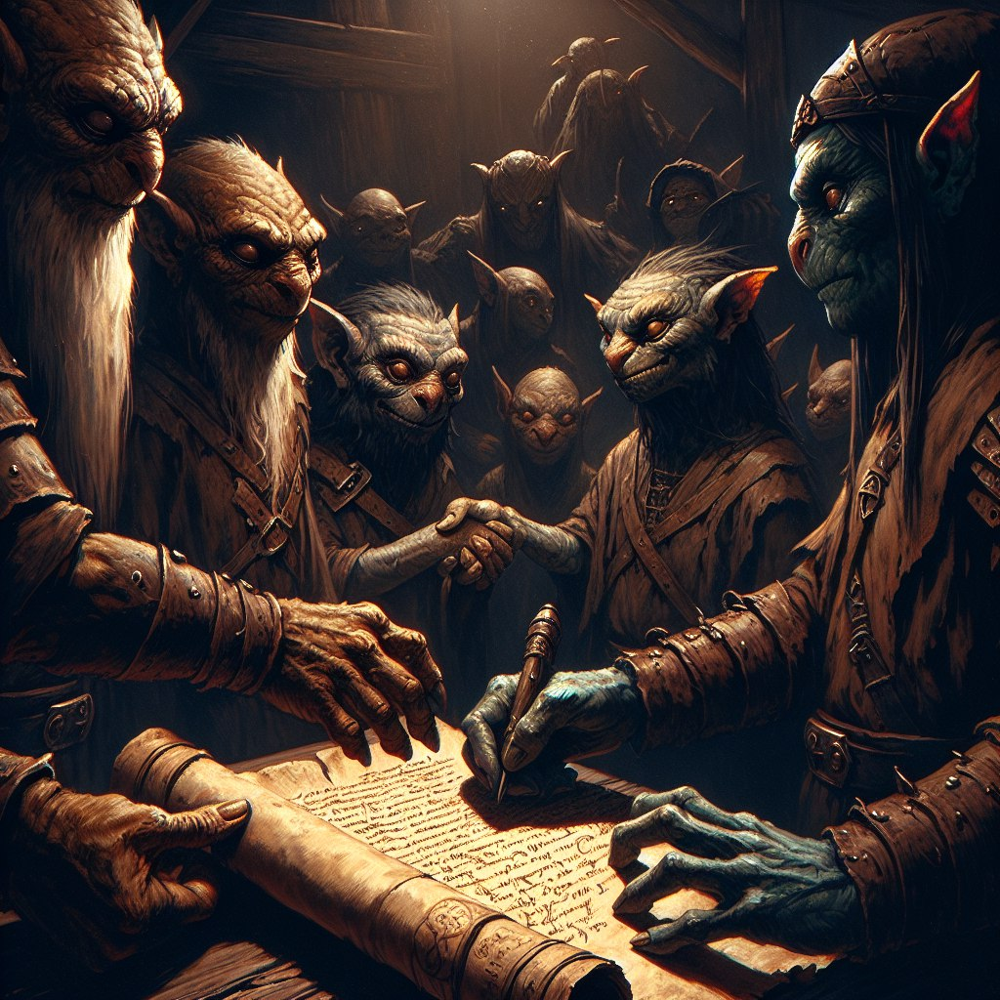

Квест Забытое соглашение. является важным для игрока, поскольку его выполнение это возможность получить перчатки из комплекта Магистра/Воина крови
Квест стартер живет в Деревня Зеркальная Гавань (94, -21) зовут его Старейшина Джулс
при визите к нему начинает диалог:
Старейшина Джулс:
Я рад снова видеть тебя в наших краях. Это, я скажу, очень кстати. Такой человек, доказавший свою надежность мне как раз и нужен сейчас. Понимаешь, такое дело, наша деревня нуждается в ресурсах, таких как медь, железо и драгоценные камни, у нас есть мастера, которые могут с ними работать. Но поставок из дальних шахт ждать приходится долго и переплачивать приходится за них втридорога. А ведь у нас под боком есть две отличные шахты, но одну заселили призраки и всякая нежить, а во второй хозяйничают кобольды. Так вот я к чему, может быть удастся договориться с кобольдами о поставках руды нам на поверхность? С призраками и нежитью, понятно, разговор не заведешь, а вот кобольды, они не такие глупые, как может показаться на первый взгляд, ну да, живут под землей и копаются в ней постоянно, но свое хозяйство ведут разумно и на посторонних на поверхности без причины не нападают. Я даже читал в одной старой книге, что когда-то давно у кобольдов был торговый договор с правителем из замка, что на востоке, и те поставляли руду в обмен на дерево, шкуры и прочий товар с поверхности. Собственно к чему я это все? Мне нужен кто-то, кто не побоится отправиться в гости к кобольдам и сумеет договориться с ними о поставках руды и драгоценных камней на поверхность. Да, дело не простое, но если все выгорит, то я готов отдать тебе один из чертежей особого снаряжения, что выкупил недавно у заезжего торговца за немалые деньги. Что скажешь? Могу я на тебя рассчитывать?
Ситис:
Интересная работа мне всегда интересна, поэтому возьмусь за дело. Я так понимаю, что путь мой лежит прямиком к кобольдам в шахту?
Старейшина Джулс:
Понятное дело, чтобы договориться с кобольдами придется отправиться к кобольдам, сами они к тебе с делегацией вряд ли прибудут. По слухам, главный их обитает в самых глубинах шахты, поэтому путь предстоит не близкий. Поэтому ты давай, не мешкай, можешь уже выступать. А я тут буду тебя ждать, возвращайся с хорошими новостями.
Игрок:
Хорошо, что в шахте той, мне уже приходилось бывать, хоть дорогу спрашивать не придется.
Для прогресса квеста нужны прийти в Шахта кобольдов (110, -24) и спуститься на 8 этаж. там живет интересующий нас персонаж. карта шахты доступна на https://observer.clan.su/load/shakhta_koboldov_1_20_ehtazh/1-1-0-11
интересует нас клетка 11 9 Восьмого этажа. тут живет Карн-Предводитель
советую попросить наемника с выполненным квестом отвести вас туда. так вы сможете пройти без боев.
Карн-Предводитель:
Зачем ты явился сюда? Уходи! Тебе здесь не рады!
Игрок:
Погоди рубить с плеча! У меня к тебе есть дело от имени жителей верхней деревни. Они предлагают заключить союз и торговать с вами. Им нужны шахтные ресурсы – руда и драгоценные камни, а в замен они предлагают дерево, шкуры и рыбу.
Карн-Предводитель:
Никогда кобольды не вступали в союзы, тем более с верхним народом. Всегда от вас одни беды. Поэтому шел бы ты отсюда по-добру по-здорову.
Игрок:
Да не горячись, уважаемый. Тем более ты не прав. Давным давно у кобольдов был торговый договор с местным правителем и всем было хорошо и все были довольны. Давай же восстановим забытое соглашение.
Карн-Предводитель:
Что-то не верится мне, в существование подобного соглашения. Но, если сумеешь доказать, что это не выдумки, и мои предки торговали с людьми, то я обдумаю твое предложение. На этом всё! Уходи!
Игрок:
Я отыщу доказательства существования этого соглашения и тогда мы снова поговорим.
Далее наш путь лежит в Подземелье Старого замка (173, -34)
Нас интересует 510 шагов и Сундук 1 но советую нажать все 5 рычагов. они останутся навечно и помогут нам получить Пояс)
по пути будет несколько варианций монстров разной степени усиления, а именно Вампир-лорд(4) [108][?]Полуночный охотник(5) [86]Рыцарь тьмы(4) [80]Око бездны(4) [88] Призрачный ужас(4) [105][?] как базовые противники. первое усиление это Патриархи 103 Лорды 135 Жрецы 70 и Тени забвения. Второе усиление это Око бездны 185 и Подземный трупоед 151.
в Сундуке нас ждет
Вы нашли Медальон кобольдов(1).
с ним снова возвращаемся к Карн-Предводитель
Игрок: Вот что я нашел в одной из самых дальних комнат в руинах старого замка. Это ведь медальон с печатью кобольдов, на стенах твоей пещеры те же самые узоры.
Карн-Предводитель: Да, действительно, медальон нашей работы, но это еще ничего не значит, хотя, возможно ты и прав и встарь мы уже торговали с людьми, но этому медальону сотни лет, с тех пор много чего изменилось. Но я соглашусь на торговлю с жителями деревни в обмен на твою помощь. Дело в том, что на нижних этажах шахты обитают демоны, уже много веков мы живем с ними бок о бок в состоянии медленной войны. В настоящее время мои воины пытаются вытеснить демонов со следующего за этим уровня шахты и закрепиться на нем. Если ты выступишь на нашей стороне и поможешь прогнать демонов, то тогда, мы обсудим союз с людьми.
Игрок: Договорились.
После чего отправляемся на этаж 9 и убиваем там 100 любых демонов, подходят даже из крупиц. счетчик убитых демонов будет в информации о квесте в профиле
после того как 100 демонов убиты, снова идем к Карну. на 8 этаже на нас уже не нападают и мы не можем исследовать клетки.
Карн-Предводитель: Мне уже сообщили, что демоны выбиты с этажа. Никак не ожидал такой храбрости от верхожителя. Теперь можно и обсудить торговый договор – пусть послы из деревни приходят в любое время, мои воины их не тронут. Ты же прими мою благодарность и вот эти камни за оказанную помощь и знай – теперь ты всегда желанный гость в стенах нашей шахты, нашего дома.
Игрок: Спасибо за камни. Я отправляюсь в деревню, чтобы сообщить хорошие вести. Ждите послов в скором времени.
Система >> Игрок : Вы получили 5 алмазов, 5 корунда и 5 обсидиана.
снова бежим в Деревня Зеркальная Гавань (94, -21) к Старейшина Джулс
Старейшина Джулс О, здравствуй-здравствуй! Я тут с нетерпением ожидаю от тебя вестей по поводу договора с кобольдами. Есть что рассказать?
Игрок: Это было не просто, но мне удалось договориться с кобольдами о заключении торгового соглашения. Можете отправлять посланников для обсуждения условий торговли.
Старейшина Джулс Сказать по-правде, я до последнего сомневался в успехе этой затеи. Однако же! Я тот час созову совет для обсуждения торгового соглашения. А ты, тем временем, взгляни на эти чертежи и выбери тот, который тебе нужнее – чертеж перчаток Магистра или чертеж перчаток Воина крови.
берем то что необходимо
Система >> Игрок : Вы успешно выполнили задание ‘Забытое соглашение’ и получаете в награду 380000 опыта и чертеж перчаток Воина крови.
Система >> Игрок : Некоторые кобольды решили испытать свою силу на Арене Больших комаров. Доступны поединки с кобольдами.
Старейшина Джулс Хорошо, ты более чем заслужил эту награду. Сейчас прошу меня извинить, много дел предстоит сделать, сам понимаешь. Но ты всегда желанный гость в наших краях, так что буду рад видеть в будущем.
Игрок: Удачных переговоров и выгодной торговли. До встречи.
и счастливо топаем в кузницу делать свой перчатки, в глубины шахты кобольдов теперь всегда будет без нападений) радуемся этому событию. если вы наемник вы можете помочь другим игрокам в прохождении квестов Проблемы с кобольдами и Забытое соглашение)